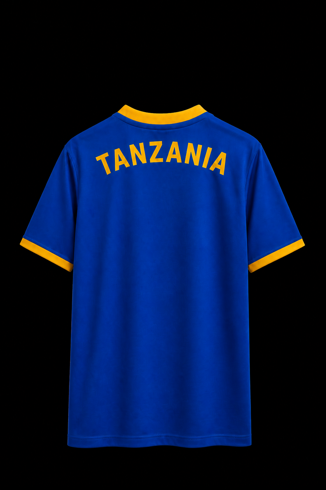
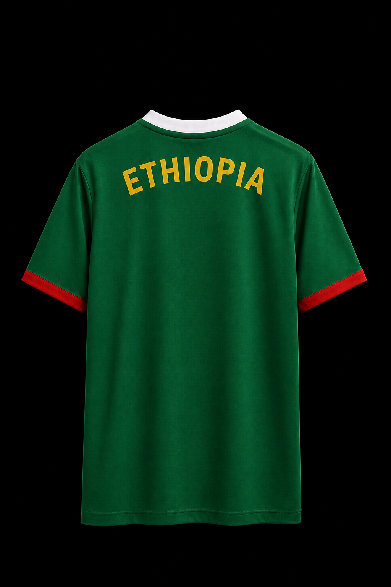
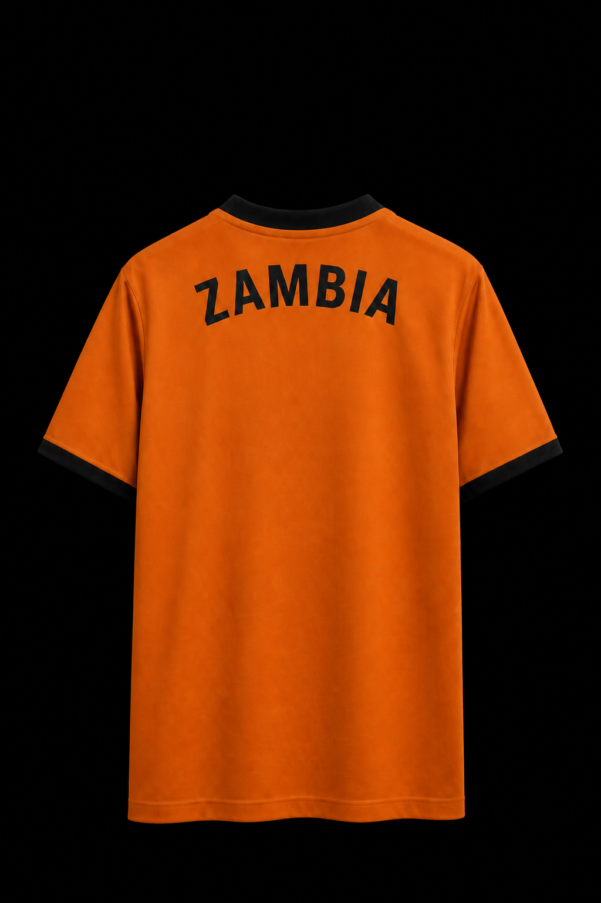
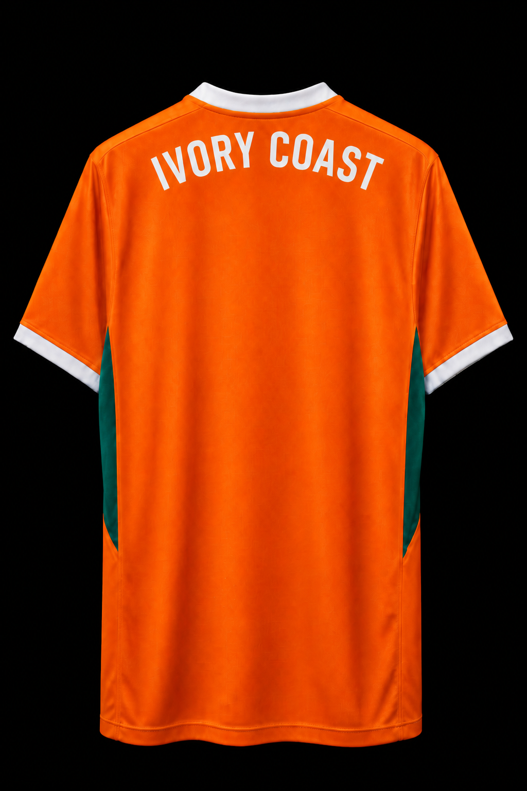
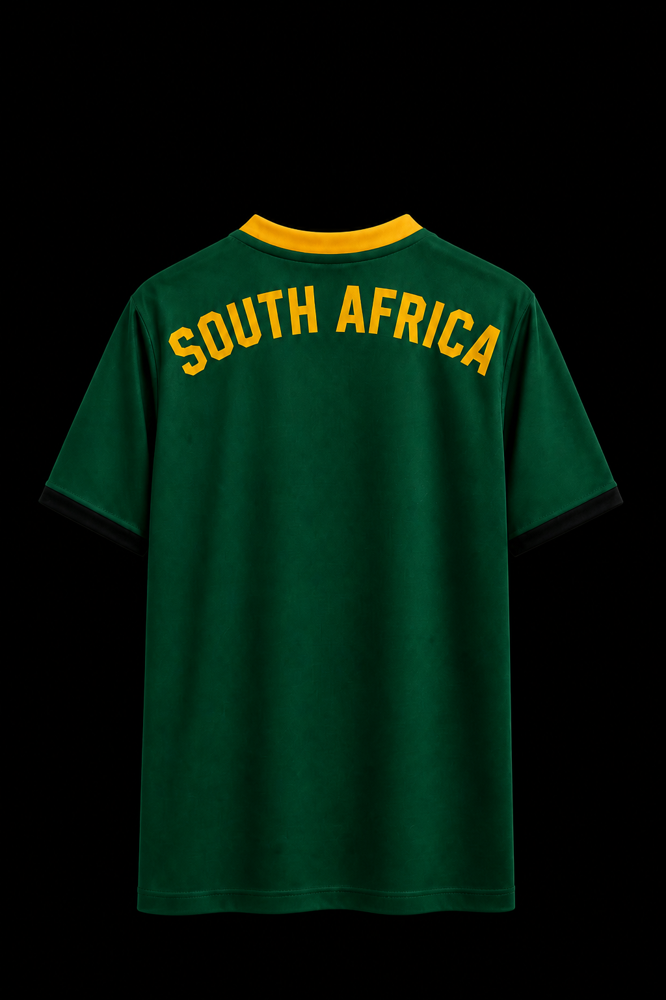
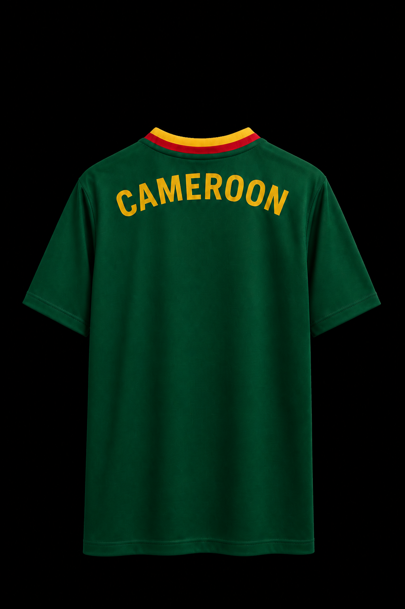

QA note. Proposed files were copied over the live named PNGs, then every photo kit was reviewed. Composer tests use ?screen=. Xibo stays display.html?location= only.
| Team | Was live | Replaced with | Confirm |
|---|---|---|---|
| Tanzania | Cameroon-green clone, small type | Royal blue, yellow collar/cuffs, TANZANIA, #000 | PASS — not Cameroon |
| Ethiopia | Cameroon-green clone | Green, white collar, red cuffs, ETHIOPIA, #000 | PASS — white collar |
| Zambia | Cameroon-green clone | Copper/orange, black collar, ZAMBIA, #000 | PASS — copper home |
| Ivory Coast | Orange kit, both words (same bytes as proposed) | Orange, white trim, IVORY COAST, #000 | PASS — both words |
| South Africa | Smaller two-word mark | Green/gold, SOUTH AFRICA max width, #000 | PASS — both words |
| Team | File | Black | No hanger | Wordmark | Kit identity | Result |
|---|---|---|---|---|---|---|
| Cameroon | soccer-cameroon-back-with-country.png | Y | Y | CAMEROON | Green, yellow-red collar (plate) | PASS |
| Morocco | soccer-morocco-back-with-country.png | Y | Y | MOROCCO | Red, green letters, white sides | PASS |
| Spain | soccer-spain-back-with-country.png | Y | Y | SPAIN | Red, gold letters | PASS |
| Nigeria | soccer-nigeria-back-with-country.png | Y | Y | NIGERIA | Green, white collar | PASS |
| Egypt | soccer-egypt-back-with-country.png | Y | Y | EGYPT | Red, white/black trim | PASS |
| Ghana | soccer-ghana-back-with-country.png | Y | Y | GHANA | Green, yellow collar, red cuffs | PASS |
| Senegal | soccer-senegal-back-with-country.png | Y | Y | SENEGAL | Green, yellow collar, red sides | PASS |
| Ivory Coast | soccer-ivorycoast-back-with-country.png | Y | Y | IVORY COAST | Orange, white, green sides | PASS |
| South Africa | soccer-southafrica-back-with-country.png | Y | Y | SOUTH AFRICA | Green, gold collar, black cuffs | PASS |
| Tunisia | soccer-tunisia-back-with-country.png | Y | Y | TUNISIA | Red, white collar | PASS |
| Kenya | soccer-kenya-back-with-country.png | Y | Y | KENYA | Black, red collar, green sides | PASS |
| Mali | soccer-mali-back-with-country.png | Y | Y | MALI | Green, yellow collar, red cuffs | PASS |
| Zambia | soccer-zambia-back-with-country.png | Y | Y | ZAMBIA | Copper, black collar | PASS |
| Angola | soccer-angola-back-with-country.png | Y | Y | ANGOLA | Red, yellow letters, black sides | PASS |
| DR Congo | soccer-drcongo-back-with-country.png | Y | Y | DR CONGO | Blue, yellow collar, red cuffs | PASS |
| Ethiopia | soccer-ethiopia-back-with-country.png | Y | Y | ETHIOPIA | Green, white collar, red cuffs | PASS |
| Tanzania | soccer-tanzania-back-with-country.png | Y | Y | TANZANIA | Royal blue, yellow collar/cuffs | PASS |
| Mozambique | soccer-mozambique-back-with-country.png | Y | Y | MOZAMBIQUE | Green, yellow collar, red cuffs | PASS |
| Rwanda | soccer-rwanda-back-with-country.png | Y | Y | RWANDA | Blue, yellow collar, green cuffs | PASS |
| Chelsea | soccer-chelsea-back-with-club.png | Y | Y | CHELSEA | Blue, gold letters | PASS |
| PSG | soccer-psg-back-with-club.png | Y | Y | PSG | Navy Hechter stripe | PASS |
| Monaco | soccer-monaco-back-with-club.png | Y | Y | MONACO | Red/white diagonal | PASS |
| Lille | soccer-lille-back-with-club.png | Y | Y | LILLE | Red, white collar/sides | PASS |
Note (not blocking): Tunisia, Egypt, Kenya, Mali, PSG lettering is flatter than the Cameroon arch. Lille/Zambia/Mali letters are a bit narrower than the Cameroon ~65% band. CSS-only EU clubs (Arsenal, etc.) are unchanged.





